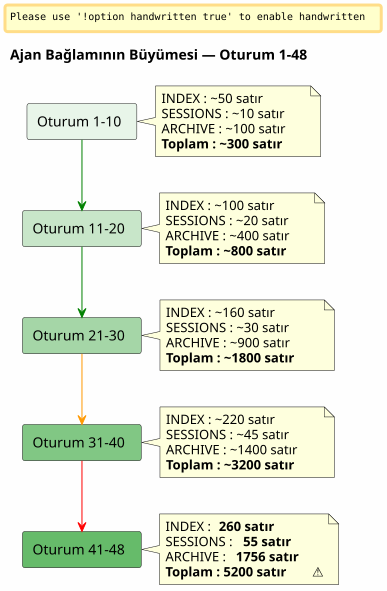

Kayan Pencere ve Soğuk Dalga: Ajan Bağlamı Patladığında ve Kaybetmeden Arşivlemek Gerektiğinde
Yayınlandı: 26 April 2026
Özet
Tek bir projede 48 oturumdan ve toplamda 150+ oturumdan sonra, özenle inşa ettiğim Eager/Lazy yönetişim sistemi boğulmaya başlamıştı. Hafif olması gereken ajan dosyaları toplamda 5200 satıra ulaşmıştı. Otomatik yüklenen bağlam, onu kontrol etme kapasitemden daha hızlı artıyordu. Bu makale, hiçbir şey kaybetmeden hafif bir aktif bağlamı korumak için — kayan pencere ile özdeş soğuk dalga arasında — bir yedekleme mekanizmasını nasıl kavramsallaştırdığımı anlatıyor.
Sinyal: 5200 Satır
Şu anda 048 numaralı oturumun tam ortasındayım, üzerinde`magic-stick`, canlı Linux ISO derleme projem. Opencode bana bakıyor. Her zamanki gibi, oturum başında Eager dosyalarımı otomatik olarak yükledi —AGENT.adoc, PROMPT_REPRISE.adoc, .agents/INDEX.adoc. Anormal bir şey yok.
Ancak bir şeyler ters. Yanıtlar daha yavaş. Muhakeme daha dağınık. Ajan, iki mesaj önce gözünün önünde olan ayrıntıları unutuyor.
Bir terminal açıyorum ve şunu yazıyorum:
wc -l .agents/INDEX.adoc .agents/SESSIONS_HISTORY.adoc \
.agents/archives/COMPLETED_TASKS_ARCHIVE_2026-04.adocINDEX için 260 satır. SESSIONS_HISTORY için 55.COMPLETED_TASKS_ARCHIVE için 1756.
Dosya`sessions/`yaklaşık 3200 satır daha ekler. Toplam:5200 satırbir şekilde ajanın geçici beynine yüklenen bağlam.
Önceki makalede teorileştirdiğim Eager/Lazy stratejisi işe yarıyor — ama öngörmediğim bir doğuştan kusuru var: o … sahip değilyaşlanma mekanizması yok. Her oturum INDEX’e bir satır, COMPLETED_TASKS’e bir paragraf, sessions/ içine bir dosya ekler. Hiçbir şey asla dışarı çıkmaz. Bağlam, her yeni oturumda büyüyen bir kartopudur.

Bu bir hata değil, her ayrıntıyı titizlikle arşivleyen oturum sonu prosedürünün doğrudan bir sonucudur. Sistem kendi başarısının kurbanıdır.
Teşhis: Üçlü Yedeklilik
Ajanın sorunu teşhis etmesini istiyorum. Yanıtı anında ve cerrahi bir kesinlikteydi.
Dosya |
Çizgiler |
Rol |
Sorun |
|
260+ |
EAGER (otomatik yüklü) |
001’den itibaren tüm oturumların tablosu —Oturum başına +1 satır |
|
55 |
EAGER |
Özet tablo —INDEX ile yedeklilik |
|
1756 |
EAGER (örtük) |
Nisan ayının tüm oturumlarının tam ayrıntıları |
|
toplam ~5200 |
LAZY (varsayılan) |
Bireysel arşivler, ancakkullanılmamışçünkü her şey zaten COMPLETED_TASKS içinde |
Ajan dört kök nedeni tespit eder:
-
COMPLETED_TASKS_ARCHIVE her şeyi emer— Arşivlere işaret etmek yerine`.sessions/`, her oturumu tamamen kopyalar.
-
INDEX.adoc` tam bir geçmiş olarak işlev görür.— "Son Oturumlar" tablosu 30+ giriş içeriyor.
-
SESSIONS_HISTORY.adoc gereksiz— INDEX ile aynı bilgi, farklı biçim.
-
LAZY kuralına uyulmuyor— COMPLETED_TASKS, her şeyi içerdiği için örtük olarak EAGER’dir.
Önerisi radikal: INDEX’i 10 oturumla sınırlamak, COMPLETED_TASKS’i boşaltmak, SESSIONS_HISTORY’yi saf LAZY’ye taşımak. Anında kazanç:~1900 satır tasarruf edildi.
Bu temiz, etkili, mantıklı. Ama bu yaklaşımla bir sorunum var.
Bariz Çözümü Neden Reddettim
Ajanın çözümü, bir önbelleği optimize eden bir mühendisin çözümüdür. Sınırla. Kısalt. Yedeklilikleri kaldır.
Ancak bu "yinelenmeler" öyle değildir. Her yönetişim dosyası bir … yakalarfarklı açıaynı gerçeklik üzerine:
-
DİZİN= görünüm, abartılı gösterge paneli
-
OTURUM_GEÇMİŞİ= doğrusal kronolojik tablo, puanlanmış
-
TAMAMLANAN_GÖREVLER_ARŞİVİmetriklerle ayrıntılı anlatı
-
sessions/*.adoc = bireysel arşivler, tam bağlam
Bu aptalca bir kopyalama değil. Bu biryapılandırılmış çoklu perspektif. Damıtmak için tam da ihtiyacımız olan şey bu — böylece daha sonra bir insan (veya daha iyi eğitilmiş gelecekteki bir LLM) açıları çaprazlayıp desenleri çıkarabilsin.
Şöyle diyen bir veri bilimci hayal edin: «6 sütundan 3’ünü çıkaralım, korelasyonlular.» Ona ne cevap verirsiniz? Her sütun aynı olgunun farklı bir boyutunu yakaladığında korelasyonun yedeklilik olmadığını. Veri setini kullanılabilir kılanın tam da bu boyutsal zenginlik olduğunu.
Bu benim sezgim. Ve onu ajanın soğuk rasyonelliğine karşı savunuyorum.
_ Fikrimde sessiz bir her şeyi toplama torbası görmüyorum. Her şeyi oraya tıkmıyoruz; oturum sonu prosedürünün yapılandırılmış sonucunu taşıyoruz — her dosya kendi açısıyla, aslında bir zenginleştirme olan yinelemeleriyle. Damıtma için daha iyi olacak olan bu çok boyutlu materyaldir. _
Ajan darbeyi alıyor. Ve kendini düzeltiyor.
Öneri: Özdeş Soğuk Dalga
Ajan bunun üzerine, zengin veri kümesi sezgime saygı duyarken bağlamın patlaması teknik sorununu çözen daha incelikli bir mekanizma öneriyor.
İlke basittir ve doğrudan pattern’den ilham alır.Sıcak/Ilık/Soğuk Depolamaarşiv yönetimine uygulanan:
-
Sıcak (EAGER)= INDEX’teki son 10 oturum, N+1 oturumunun PROMPT_REPRISE’ı, son 2 oturum dosyası
-
Sıcak (TEMBEL)= son SESSIONS_HISTORY, SCRIPT_VERIFICATION, tüm referans dokümantasyonu
-
Soğuk (yedek/)= geri kalan her şey, taşınmışbozulmamış, dönüşüm olmadan, yeniden indeksleme olmadan
----
.agents/
├── INDEX.adoc → Sessions N-9 à N (10 dernières)
├── SESSIONS_HISTORY.adoc → Sessions N-9 à N
├── SCRIPT_VERIFICATION.adoc → Dernière vérif (pas d'historique)
├── PROMPT_REPRISE.adoc → Session N+1 uniquement
├── sessions/ → Sessions N-1 à N uniquement
└── backup/
└── Y2026-sessions-001-039/ ← Vague froide, COPIE INTÉGRALE
├── INDEX.adoc → Sessions 001 à 039 (complet)
├── SESSIONS_HISTORY.adoc → Sessions 001 à 039 (complet)
├── COMPLETED_TASKS_ARCHIVE.adoc → Sessions 001 à 039 (complet)
└── sessions/ → 001.adoc, 002.adoc...
----
Mekanizmanın anahtarı:**Yedek, merkezi bir dizin değil; geçmiş dalganın birebir kopyasıdır.**. Aktif 10 oturum ufkunu aştığımızda hiçbir şey silinmez. Hiçbir şey yeniden indekslenmez. Hiçbir şey birleştirilmez. Agent dosyaları paketini N-10 oturumundaki haliyle alır ve ... içine taşırız`backup/`.
Aktif dosyalar ise kesilir:
* DİZİN : yalnızca son 10 satır (kayan pencere)
* SESSIONS_HISTORY : aynı
* COMPLETED_TASKS_ARCHIVE : cari dönem için yeni dosya
* sessions/ : yalnızca son 2 oturum
[plantuml, format=svg, id=diag-hot-warm-cold, alt="Architecture Hot/Warm/Cold du contexte agent — EAGER/LAZY/backup"]
----
@startuml
skinparam backgroundColor #FEFEFE
skinparam defaultTextAlignment center
skinparam wrapWidth 200
title Agent Bağlamının Sıcak / Ilık / Soğuk Mimarisi
package "HOT (EAGER)\nChargé otomatik olarak\n~300 satır" as HOT #FFCDD2 {
file "INDEX.adoc\n(10 sessions)" as IDX_HOT
file "PROMPT_REPRISE\n(session N+1)" as PRO_HOT
file "AGENT.adoc\n(règles absolues)" as AG_HOT
}
package "WARM (LAZY)\nChargé talep üzerine\n~500 satır" as WARM #FFF9C4 {
file "SESSIONS_HISTORY\n(10 dernières)" as HIS_WARM
file "SCRIPT_VERIFICATION\n(dernière)" as VER_WARM
file "PROCEDURES.adoc\n(templates)" as PRO_WARM
file "*_REFERENCE.adoc\n(doc technique)" as REF_WARM
}
package "COLD (backup/)\nJamais yüklendi\nLecture yalnızca insan" as COLD #BBDEFB {
folder "Y2026-001-039/" as WAVE {
file "INDEX (tam)" as IDX_COLD
file "SESSIONS_HISTORY\n(complet)" as HIS_COLD
file "COMPLETED_TASKS\n(complet)" as ARCH_COLD
folder "sessions/ (001-039)" as SESS_COLD
}
folder "Y2026-040-???\n(future)" as FUTURE
}
HOT --> WARM : "Agent yukarı iletir\ngerekirse"
WARM --> COLD : "Asla otomatik\nL'insan oraya yalnız gider"
note bottom of COLD
Kural: COPIE INTÉGRALE
Dönüşüm yok
Yeniden dizinleme yok
Arşivlemeden sonra salt okunur
end note
@enduml
----
Anlık kazanç çok büyük: EAGER bağlamı ...'den ...**~5200 satır, ~300 satırda**. 17'ye bölme. Tek bir tarihsel veri satırını bile kaybetmeden.
== Neden Bu Her Şeyi Kapsayan Bir Şey Değil
Ajan, ilk iterasyonunda, korkuyordu ki`backup/`bir kara kutuya dönüşmesi — asla yeniden okunmayacak dosyaların atıldığı bir klasör. Bu meşru bir korkudur. Ama bir yanılgıya dayanır.
Bir karma kutu, dosyaları çöpe attığınız zamandır.**yapı olmadan, konvansiyon olmadan, gruplama mantığı olmadan**. Burada yedekleme dönemlere göre yapılandırılmıştır (Y2026-001-039) ve her yedekleme klasörü içerir**aynı yapı**dosya`.agents/`aktif : INDEX, SESSIONS_HISTORY, COMPLETED_TASKS_ARCHIVE, sessions/.
Bu bir her şeyi kapsayan şey değil. Bu bir**zaman damgalı anlık görüntü**. Hatta bunun basitleştirilmiş bir sürümleme mekanizması olduğu bile söylenebilir — ancak şu farkla ki, dosyaları tek tek sürümlemez, yönetişimin belirli bir andaki tam paketini sürümler.
Eski bir bilgiyi yeniden bulmak istediğinizde, merkezi bir dizine ihtiyacınız yoktur. İki seçeneğiniz vardır:
1. **grep` hedefli** : `grep -r "zsh" backup/Y2026-001-039/`— ve dönemde zsh'den bahseden her şeyi, hangi açıdan olursa olsun (INDEX, SESSIONS_HISTORY, oturum arşivi) bulursunuz.
2. **Manuel yeniden entegrasyon**: yedekleme klasörünü geçici olarak etkin bağlama kopyalarsınız ve ajandan bu belirli dönemi analiz etmesini istersiniz.
İndeks örtüktür. Dosyaların yapısının tam da içindedir — her biri zaten kendi açısından bir indekstir.
== Rafların Metaforu
Mekanizmayı sezgisel hale getirmek için onu üç raf halinde kavramsallaştırdım:
* **Raf 1 (EAGER)**— çalışma planı. *Şimdi* ihtiyacım olan şey. Güncel INDEX, PROMPT_REPRISE, mutlak kurallar. Hafif, anında, kritik.
* **Raf 2 (LAZY)**— başvuru kütüphanesi. Talep üzerine gidip getirebileceğim şeyler. Teknik referanslar, yakın geçmiş, prosedürler. Daha hacimli, ama belleğe yüklenmemiş.
* **Mahzen (backup/)**— soğuk arşivler. Geçmiş olan ama atmak istemediğim her şey. Ajan oraya asla girmez. İnsan damıtmak istediğinde oraya iner.
Ajan başlangıçta dördüncü bir raf önerdi — bir`index-backup.adoc`ki LAZY olurdu ve tüm yedeğin içindekiler tablosunu içerirdi. Reddettim. Bu, zaten doğrusal büyüme sorunu yaşayan bir sistemde bir yedeklilik daha olurdu. Arşivlenen dosyaların yapısı zaten bir dizindir.
== İki Tetikleyicili Sensör
Kavramsallaştırma sağlamdı, ancak bir kör nokta kalmıştı:**Rotasyon tam olarak ne zaman tetiklenmeli?**İlk makale bunu açık bir soru olarak tanımlıyordu. İki gün sonra, cevap altı projenin yönetişim dosyalarında kodlanmıştır: iki tetikleyicili bir sensör.
=== Otomatik Tetikleyici — `N % 10 == 0
İlk tetikleyici matematikseldir. Oturum numarası 10'un katı olduğunda — oturum 10, 20, 30, 40 — yedekleme rotasyonu, oturum sonlandırma prosedürü içinde, 6. adımdan hemen sonra otomatik olarak çalışır.
Neden 10? Bu, birbirine zıt iki güç arasındaki uzlaşmadır: çok kısa bir pencere (5 oturum) süreklilik için gereken bağlamı kaybeder; çok uzun bir pencere (20 oturum) bağlamın şişkinliği sorununu çözmez. Günde bir ila iki oturumluk bir ritimde on oturum, yaklaşık bir haftalık çalışmayı kapsar — ajanın son kararları hatırlaması için yeterli, bağlamın patlaması için yeterli değil.
=== Eşik Tetikleyicisi — 500 EAGER Satır
İkinci tetikleyici dinamiktir. Oturum numarasından bağımsız olarak, birikmiş EAGER dosyaları aşarsa**500 satır**, rotasyon tetiklenir.
Bu eşik, oturumların olağanüstü verimli olduğu senaryoya karşı koruma sağlar — az sayıda oturumda çok fazla içerik yazılması. 120 satır editoryal içerik üreten bir oturum, COMPLETED_TASKS_ARCHIVE'ı iki satırı düzelten bir hata ayıklama oturumundan çok daha hızlı büyütür. 500 satırlık eşik, şu aracılığıyla ölçülür:`wc -l .agents/INDEX.adoc .agents/archives/COMPLETED_TASKS_ARCHIVE_*.adoc PROMPT_REPRISE.adoc`, bu asimetriyi yakalar.
=== Manuel Tetikleyici — "yedekleme rotasyonu
Sonuç olarak, kontrol insanda kalır. Anahtar kelimeler`rotation backup`, `backup rotation` ou `lance la rotation backup`prosedürü talep üzerine, oturumun sonundan bağımsız olarak tetikler. Bağlamın ağırlaştığını hissettiğimizde ama henüz 10'un katında olmadığımızda veya yeni bir çalışma aşamasına başlamadan önce bir aşamayı arşivlemek istediğimizde kullanışlıdır.
[plantuml, format=svg, id=diag-capteur-trigger, alt="Les trois déclencheurs du capteur de rotation backup — automatique, seuil, manuel"]
----
@startuml
skinparam backgroundColor #FEFEFE
skinparam defaultTextAlignment center
skinparam wrapWidth 200
title Yedek Dönüş Sensörü — Üç Tetikleyici
start
:Oturum sonlandırma prosedürü;
note right: Mots-clés "oturum sonu"\nou "burada duruyoruz"
:Adımlar 1 - 6\n(archivage standard);
note right
1. Oturumları arşivle/N.adoc
2. MAJ PROMPT_REPRISE
3. MAJ SESSIONS_HISTORY
4. MAJ INDEX.adoc
5. MAJ TEST_COVERAGE
6. MAJ COMPLETED_TASKS
end note
if (N % 10 == 0\nOU\nEAGER cumulé > 500 lignes ?) then (oui)
:⚙️ Yedekleme Rotasyonu\n(étape 7);
note right
1. backup/Y20XX-sessions-X-Y/ oluştur
2. Kopyala intégrale INDEX + HISTORY
+ COMPLETED_TASKS + sessions/
3. Aktifleri 10 oturuma kısalt
4. _Aktif konum_ ekle
end note
else (non)
:Döndürme yok;
endif
:Kontrol listesi [✅] x 7\n(si applicable);
stop
@enduml
----
Bu diyagram, sensörün oturum sonu prosedürüne tam olarak yerleştirilmesini gösterir. Adım 7 isteğe bağlıdır — yalnızca iki koşuldan biri doğruysa yürütülür — ancak sistematik olarak *doğrulanır*. Nihai kontrol listesi şunları içerir`[✅] 7. Backup roté (si applicable)`.
=== Kapalı Döngü
Bu sensör, önceki makalenin açtığı döngüyü kapatıyor. Eager/Lazy yönetişimi, iki oturum arasındaki ajan belleği sorununu çözmüştü. Hot/Warm/Cold mekanizması, büyüyen bellek sorununu çözdü. İki tetikleyicili sensör *ne zaman* sorununu çözüyor — bağlam boyutunu izleme zihinsel yükünü insanın üzerinden alıyor.
[plantuml, format=svg, id=diag-boucle-fermee, alt="Les trois couches de la gouvernance agent — Eager/Lazy, Hot/Warm/Cold, Capteur"]
----
@startuml
skinparam backgroundColor #FEFEFE
skinparam defaultTextAlignment center
title Ajan Yönetişiminin Üç Katmanı
left to right direction
package "Katman 1 — Bellek\n(Article 0108)" as C1 #E8F5E9 {
rectangle "**EAGER**\nTableau yerleşik\nCharg otomatik" as EAG
rectangle "**LAZY**\nManuel tescilli\nCharg talep üzerine" as LAZ
EAG -[hidden]right-> LAZ
}
package "Katman 2 — Yaşlanma\n(Article 0110)" as C2 #FFF9C4 {
rectangle "**HOT**\n10 aktif oturum\n~300 satır" as HOT
rectangle "**WARM**\nR referanslar\nProc prosedürler" as WRM
rectangle "**COLD**\nyedek/\nVague soğuk" as CLD
HOT -[hidden]right-> WRM
WRM -[hidden]right-> CLD
}
package "Katman 3 — Tetikleyici\n(Aujourd'hui)" as C3 #BBDEFB {
rectangle "**Otomatik**\nN % 10 == 0" as AUTO
rectangle "**Eşik**\n> 500 satır" as SEUIL
rectangle "**Manuel**\nyedek rotasyonu" as MAN
AUTO -[hidden]right-> SEUIL
SEUIL -[hidden]right-> MAN
}
C1 --> C2 : "Bellek büyür\n→ bir yaşlanma mekanizması\ngerekir"
C2 --> C3 : "Yaşlanma\n→ onu yürütmek için\nbir tetikleyici gerekir"
note bottom of C3
✅ 6 projeye dağıtıldı
magic-stick · bakery-gradle
plantuml-gradle · cheroliv.com
jhipster-gradle-plugins
quizz-benchmark-gradle
end note
@enduml
----
Üç katman mantıksal olarak üst üste yığılır. Birincisi ajana bir bellek verir. İkincisi bu belleğin ajanı boğmasını engeller. Üçüncüsü, insanın bunu düşünmek zorunda kalmaması için bu belleğin bakımını otomatikleştirir.
=== cheroliv.com Üzerinde Etkili Geçiş
Mekanizma teorik kalmadı. Üzerine`cheroliv.com`, ilk yedekleme rotasyonu 29 Nisan 2026'da gerçekleştirildi — -6 ile 2 arasındaki oturumlar ...'e taşındı`.agents/backup/Y2026-sessions-neg6-a-002/`:
|===
|Dosya |Döndürmeden önce |Rotasyondan sonra |Kazanç |`.agents/INDEX.adoc` |19 oturum listelendi |10 oturum (3-12) |-9 başlangıç |`.agents/SESSIONS_HISTORY.adoc` |18 oturum |10 oturum |-8 giriş |`COMPLETED_TASKS_ARCHIVE` |161 satır (1-12. oturumlar) |135 satır (oturumlar 3-12) |-26 satır |`sessions/` |20 dosya |10 dosya |-10 dosya |**yedek/** |Mevcut değil |1 soğuk dalga (10 arşivlenmiş oturum) |+1 soğuk paket
|===
Satır kazancı mütevazıydı — proje genç, 12 oturum — ama önemli olan şu ki**mekanizma yerinde**. Bir sonraki otomatik rotasyon 20. oturumda veya 500 EAGER satırına ulaşılırsa daha erken tetiklenecek.
== İnsan-Ajan Dersi
Bu 048 oturumu bana bir yapay zeka ajanıyla işbirliği konusunda temel bir şey öğretti.
Ajanın doğal bir önyargısı vardır: ... yapmaya çalışır**optimize etmek**, à **basitleştirmek**, à **Gereksiz tekrarları ortadan kaldırmak**. Bu, temiz ve özlü yanıtlar üretmek üzere eğitilmiş bir sistemin yanlılığıdır. Zengin ve çok boyutlu bir veri seti karşısında ilk refleksi, onu en basit hâline indirgemektir.
İnsan ise farklı bir sezgiye sahiptir: yapılandırılmış yedekliliğin bir**koz**, bir kusur değil. Aynı gerçekliğe dair bakış açılarının çeşitliliği, tam da daha sonra nitelikli bir damıtmaya olanak tanıyacak şeydir.
Ajanın haksız olması değil. Mesele, onun "optimum"unun benimki olmaması. Ajan şunun için optimize ediyor:**mevcut**— yakın bağlam, sorulan soruya hızlı yanıt. İnsan, ... için optimize eder**gelecek**— üç ay ya da üç yıl sonra yeniden bulma, çaprazlama ve damıtma kapasitesi.
____ İstediğim şey ham malzeme. Düşüncelerin, tereddütlerin, sorularıma verdiğin yanıtlar. Senin sentezin değil. Sentezi senden daha iyi yapabilirim. Ham maddeyi istiyorum. ____
Bu oturumun sonunda ona söylediğim bu cümle her şeyi özetliyor. Ajan bir üretim aracıdır. İnsan, damıtma aracıdır. Yönetişim, ajanın her şeyi tek başına anlaması için değil — insanın daha sonra üretilen malzemeyi işleyebilmesi için vardır.
Aynı soğuk dalga bu felsefenin mimari çevirisidir: hiçbir şey atılmaz, hiçbir şey birleştirilmez, hiçbir şey yeniden indekslenmez. Paket olduğu gibi taşınır. Damıtma daha sonra, elle, insan tarafından yapılacaktır.
== Önceki Makalenin Mantıksal Devamı
Eğer okuduysanızlink:/blog/2026/0108_gouvernance_agent_opencode_eager_lazy_post.html[Eager/Lazy stratejisi hakkındaki makale], doğal ilerlemeyi tanıyacaksınız:
1. **Madde 0108**— Eager/Lazy yönetişimi: ajan bağlamını iki kullanılabilirlik düzeyinde *nasıl* yapılandırmalı
2. **Bu ürün 0110**— Yedekleme mekanizması: Bu bağlamı çok hacimli hale geldiğinde kaybetmeden *nasıl* yaşlandırmalı
İlk makale şu soruyu yanıtlıyordu: « Ajan iki oturum arasında hiçbir şeyi hatırlamıyor, ona nasıl bir hafıza kazandırılır?
Bu, birincisinden kaçınılmaz olarak doğan şu soruyu yanıtlıyor: «Bellek her oturumda büyüyor; onu silmeden ajanı boğmasını nasıl engelleriz?
Cevap bir örüntüde yatıyor:**Sıcak/Ilık/Soğuk**, yönetişim dosyalarına uygulanan. Ve bir ilke olarak:**Hiçbir şeyi asla kaybetmemek, her şeyi her zaman yeniden konumlandırmak.**.
== Bağlantılar
* Önceki makale:link:/blog/2026/0108_gouvernance_agent_opencode_eager_lazy_post.html[Bir Yapay Zekâ Ajanını AsciiDoc ile Yönetmek]
* Sitem: https://cheroliv.com
* Proje`magic-stick` : https://github.com/cheroliv/magic-stick
---
*İyi bir yönetişim sistemi verileri asla silmez. Onları saklar.*